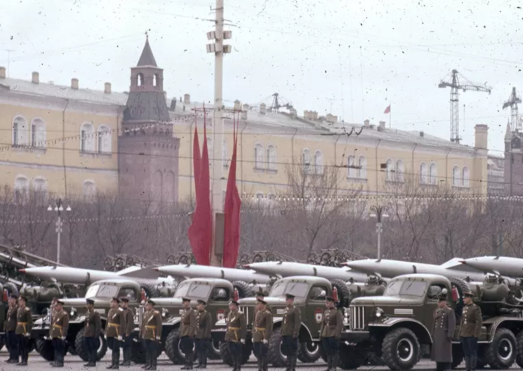
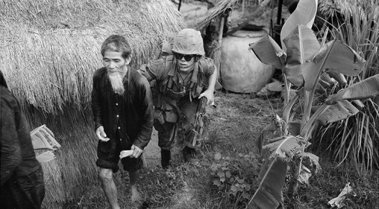

История Холодной войны
Последовательность событий
Холодная война — особый тип межгосударственного конфликта с жёстким идеологическим, экономическим и военно-политическим противостоянием разных общественно-политических систем. Термин «холодная война» используют в первую очередь для обозначения исторического периода в международных отношениях во второй половине XX века между военно-политическими блоками во главе с СССР и США. Начало холодной войны СССР и США принято отсчитывать с 1946 года.
Проще говоря, это политико-экономическая, военная и идеологическая конфронтация двух систем — социалистической и капиталистической, балансирующая на грани открытого конфликта.
Или, как бы тут сказал знаменитый британский писатель Джордж Оруэлл, это «мир, который не мир». А если брать советско-американский конфликт XX века, то его можно назвать борьбой капитализма и социализма или совсем широко — невоенным противостоянием двух систем или держав.
Предпосылки конфликта
Вторая мировая война значительно изменила расклад сил в мире, который больше не был европоцентристским. Потерпели поражение Германия и Япония. Значительно ослабли позиции Англии и Франции.
Только одна западная держава вышла из этой войны более сильной, чем вступала в конфликт. Соединённые Штаты Америки не вели боевых действий на своей территории, и потому их города остались невредимы. Даже людские потери были невелики в сравнении с потерями других стран. Зато война привела к расцвету американской военной промышленности и поставила другие страны мира в зависимость от экспорта из США.
В 1945 году доля США в промышленной продукции западных стран составила почти две трети — это около трети мирового экспорта товаров. Американские банки сконцентрировали у себя более половины золотого запаса западного мира.
Второй послевоенной сверхдержавой стал Советский Союз. Огромный вклад СССР в победу над гитлеровской Германией вызвал симпатии к нему на Западе и поддержку коммунистов в разных странах.
Таким образом, после войны Советский Союз получил доминирующее военно-политическое и экономическое влияние в Польше, Чехословакии, Румынии, Венгрии, Болгарии, Югославии и Албании. А с освобождением советской армией Китая и Северной Кореи от фашизма и японского милитаризма СССР имел влияние и в этих странах.
Причины глобальной напряженности
- Страх. Сверхдержавы-победители — США и СССР — после Второй мировой войны обоснованно боялись возросшего влияния друг друга на другие государства. Взаимные опасения вскоре перешли в борьбу за сферы влияния и в бешеное соперничество за статус единственной сверхдержавы.
- Ресурсы. Экономический рост требует обмена сырьём и конечными продуктами всех форм потребления. Потому и СССР, и США вели борьбу за рынки оборота своих и чужих ресурсов. Имея контроль над территорией других стран, они могли контролировать чужие ресурсы, включая такие важные, как нефть, газ и полезные ископаемые. Даже если сверхдержава не могла распорядиться всеми благами «партнёров», то она держала их вне влияния конкурента.
- Идеологический конфликт. Антагонизм капиталистической Америки и социалистического Советского Союза делал их в лучшем случае временными союзниками. Идеологические противоречия между двумя моделями общества — социалистической и капиталистической — были непреодолимы.
 Основание Германской Демократической Республики. Лидеры ГДР: президент Вильгельм Пик и
премьер-министр Отто Гротеволь , 1949 год
Основание Германской Демократической Республики. Лидеры ГДР: президент Вильгельм Пик и
премьер-министр Отто Гротеволь , 1949 год
Противники в холодной войне
Сверхдержавы-победители — и Советский Союз, и Америка — имели колоссальное влияние в мире. Идеологические противоречия подливали масла в огонь страха перед коммунистической (для США), либо империалистической (для СССР) экспансией.
4 апреля 1949 года по инициативе США и Канады в Вашингтоне был создан военно-политический блок, названный Североатлантическим договором (НАТО). Стран, подписавших соглашение, первоначально было двенадцать — это Бельгия, Великобритания, Дания, Исландия, Италия, Канада, Люксембург, Нидерланды, Норвегия, Португалия, США, Франция. В качестве цели для блока было указано «укрепление стабильности и повышение благосостояния в Североатлантическом регионе».
В ответ на это Советский Союз создал свою организацию из стран социалистического лагеря. 14 мая 1955 года в Варшаве был подписан Договор о дружбе, сотрудничестве и взаимной помощи между представителями Албании, Болгарии, Венгрии, ГДР, Польши, Румынии, СССР и Чехословакии. Этот военный союз получил название «Организация Варшавского договора» (ОВД). Государства-участники обязались оказывать помощь друг другу в случае нападения. На территориях блока появились части советской армии.
Таким образом большая часть мира раскололась на два противоположных лагеря — капиталистический и социалистический. Это обстоятельство на многие десятилетия определило всю мировую политику. Утвердившаяся концепция «двух лагерей» на Западе способствовала представлению об СССР как источнике угрозы. Они видели в странах-участницах Варшавского договора потенциального агрессора, готового напасть и покорить Западную Европу. И хотя социалистический блок во главе с СССР неизменно выступал за мирное сосуществование, для них США был лагерем империализма, проводившим политику насилия над народами.
Выражения противостояния
Глобальный конфликт находил проявления во многих аспектах. Сверхдержавы пропагандировали свой образ жизни и мировидение — капиталистическое либо коммунистическое. И стремились поддержать соответствующий режим в других странах.
Действия сверхдержав будут понятнее, если помнить, что основная цель в холодной войне — долговременное негативное воздействие на противника. Например, в попытках подорвать чужую экономику и заставить оппонента действовать на износ. Или лишить правительство противника поддержки населения.
Таким образом холодная война подстёгнула оба блока:
- постоянно увеличивать свои военные бюджеты;
- делать упор на разработку средств обороны;
- создавать всё более совершенные виды вооружения;
- законсервировать идеологические постулаты.
В погоне за ресурсами и США, и СССР желали как можно дальше расширить своё влияние. Борьба шла по всем направлениям, чтобы завоевать сторонников, в гонке вооружений и в стремлении достичь лучших экономических показателей, чтобы продемонстрировать оппоненту превосходство своей системы.
Основные проявления холодной войны:
- открытая идеологическая конфронтация;
- жёсткая пропаганда и информационная война;
- создание военно-политических блоков (НАТО и ОВД);
- гонка вооружений;
- минимум экономических и гуманитарных контактов между блоками;
- строительство множества военных баз в странах-союзниках;
- нарочитая демонстрация силы для укрепления своего авторитета и устрашения противника;
- постоянная готовность к открытому военному конфликту;
- полицейские функции своих вооружённых сил;
- огромные военные расходы.
Образ врага, который вырисовывался в каждом из блоков, играл в этом противостоянии ключевую роль. Историки отмечают, что для сверхдержав важным было не только утвердить себя на международной арене, но и найти поддержку внешней политики у своих граждан. Для формирования нужного мнения в ход шли средства массовой информации (пресса, а затем телевидение), искусство (особенно киноискусство), литература и школьное образование. В этом СССР и США были в каком-то смысле «зеркалом» друг для друга.
Обе сверхдержавы, воодушевлённые своей победой во Второй мировой войне, заявляли о претензии на мировое господство. Их взаимные фобии определяли внешнюю и внутреннюю политику. При этом в СССР военная угроза была состоянием перманентным.
Этот страх не был беспочвенным. Клаус Науман, в середине 90-х — председатель Военного комитета НАТО, в 1995 году заметил в интервью польскому общественно-политическому журналу Wprost: «В период холодной войны командные пункты НАТО были в постоянной готовности к проведению массированного наступления по всей Европе».
Фактор ядерного сдерживания в холодной войне
Появление ядерного оружия определило многие события второй половины XX века. Оно повлекло за собой и такое явление, как «ядерное сдерживание». Основатель неолиберальной теории международных отношений Кеннет Уолтц отмечал, что благодаря атомной бомбе баланс сил между сверхдержавами держался главным образом за счёт их национальных вооружённых сил, а не за счёт союзников.
Основные периоды холодной войны
Холодная война имеет чётко очерченные хронологические рамки — с 1946 по 1991 год. Но первый шаг к конфронтации был сделан летом 1945 года на Потсдамской конференции. На эту встречу приехали союзники по антигитлеровской коалиции — главы государств и правительств США, Англии и СССР. Они собрались обсудить вопросы мирного послевоенного устройства Европы.
Одновременно с этой конференцией в Америке шли первые испытания атомной бомбы. Едва узнав, что они прошли успешно, президент США Гарри Трумэн приказал немедленно использовать новое оружие против Японии.
Атомная бомбардировка японских городов Хиросимы и Нагасаки в начале августа 1946 года была не просто военной операцией, чтобы ускорить капитуляцию Японии. Другой целью было продемонстрировать возможности бомб СССР, чей международный авторитет после победы над Германией очень сильно возрос.
Советский Союз расценил эту демонстрацию как угрозу своей национальной безопасности. Он приложил все силы, чтобы доработать своё оружие и подорвать ядерную монополию США.
29 августа 1949 года на полигоне под Семипалатинском СССР провёл тестовый ядерный взрыв и тем самым вступил в атомную эпоху. Эта первая советская ядерная бомба получила название РДС-1 — реактивный двигатель Сталина-1.
Начало холодной войны (1946–1953)
Холодная война, по мнению историков, началась с программной речи лидера страны-победительницы во Второй мировой войне. Но вот чья это была речь — лидера Великобритании или Советского Союза, здесь мнения исследователей расходятся.
Первая версия. Формальным началом холодной войны стала речь лидера британских консерваторов Уинстона Черчилля 5 марта 1946 года в Фултоне (США).
Незадолго до этого Черчилль проиграл на парламентских выборах в Великобритании и вышел в отставку. В Фултоне он обвинил СССР в агрессии и заявил о необходимости для западных стран вступить в союз для борьбы с мировым коммунизмом:
По сути, здесь Черчилль выступил идеологом холодной войны. Фултонская речь стала манифестом этого конфликта.
Вторая версия. В западной историографии главным событием, указывающим на начало кризиса в отношениях между СССР и США, считают речь генерального секретаря ЦК КПСС Иосифа Сталина 9 февраля 1946 года. Он произнёс её в Большом театре на предвыборным собрании избирателей. Вероятно, западные исследователи увидели перспективу нового вооружённого конфликта в словах:
Есть и другие точки зрения, которые относят начало «похолодания» в отношениях между Советским Союзом и Соединёнными Штатами к 1945 году и даже ранее. Общее здесь то, что каждая сторона обвиняла своего главного оппонента в развязывании холодной войны.
 Военный парад на Красной площади, Москва, СССР. 7 ноября 1957 г. Ракета Р-5М (обозначение НАТО:
SS-3 Шистер). Жидкотопливная управляемая ракета класса «земля-земля», впервые появившаяся в 1957
году.
Военный парад на Красной площади, Москва, СССР. 7 ноября 1957 г. Ракета Р-5М (обозначение НАТО:
SS-3 Шистер). Жидкотопливная управляемая ракета класса «земля-земля», впервые появившаяся в 1957
году.
Война в Корее 1950-1953
- Война в Корее была конфликтом между Северной Кореей, поддерживаемой Китаем и Советским Союзом, и Южной Кореей, поддерживаемой США и другими членами ООН.
- Причины войны
- Война началась 25 июня 1950 года, когда Северная Корея вторглась в Южную Корею с целью объединения Корейского полуострова под своей властью. Это было вызвано желанием Северной Кореи создать единое корейское государство и распространить коммунистическую идеологию на весь полуостров.
- Ход войны
- Война велась на нескольких фронтах, включая сражения в Пусане, Инчхоне и Чосине. США и другие члены ООН вступили в войну на стороне Южной Кореи, предоставив ей военную и экономическую помощь.
- Результаты войны
- Война завершилась подписанием перемирия 27 июля 1953 года, установившего демилитаризованную зону между Северной и Южной Кореей. Однако, формального мирного договора не было заключено, и конфликт между Северной и Южной Кореей остается неразрешенным до сих пор.
- Последствия войны
- Война имела значительные последствия для региона и мира, включая:
- Более 2 миллионов погибших
- Значительный ущерб экономике и инфраструктуре Кореи
- Укрепление позиций США в регионе
- Усиление напряженности между США и Китаем, а также между США и Советским Союзом
- Создание военного союза между США и Южной Кореей
- Главные участники войны
- Северная Корея: поддерживалась Китаем и Советским Союзом
- Южная Корея: поддерживалась США и другими членами ООН
- Китай: поддерживал Северную Корею и предоставлял ей военную помощь
- Советский Союз: поддерживал Северную Корею и предоставлял ей военную помощь
 25 июня 1950 года с наступления северокорейских войск началась Корейская война
25 июня 1950 года с наступления северокорейских войск началась Корейская война
Арабо-израильские войны с 1948 по 1982
- Арабо-израильская война 1948-1949 годов: Война за независимость Израиля, началась после провозглашения независимости Израиля 14 мая 1948 года. Война велась между Израилем и коалицией арабских государств, включая Египет, Иорданию, Ливан, Сирию и Ирак. Израиль смог отразить арабские нападения и сохранить независимость.
- Суэцкий кризис 1956 года: Израиль, Франция и Великобритания совместно напали на Египет, чтобы вернуть контроль над Суэцким каналом, который был национализирован египетским президентом Гамалем Абдель Насером. Война завершилась выводом войск и восстановлением статуса Суэцкого канала как международной зоны.
- Шестидневная война 1967 года: Израиль предпринял превентивный удар против Египта, Сирии и Иордании, что привело к быстрой победе Израиля и захвату Голанских высот, Западного берега реки Иордан и сектора Газа. Война завершилась подписанием перемирия, но формального мирного договора не было заключено.
- Война на истощение 1967-1970 годов: Египет начал кампанию по истощению против Израиля вдоль Суэцкого канала, включая артиллерийские обстрелы и командные рейды. Война завершилась подписанием соглашения о прекращении огня, но формального мирного договора не было заключено.
- Война Судного дня 1973 года: Египет и Сирия совместно напали на Израиль в день еврейского праздника Йом-Киппур. Война завершилась подписанием соглашения о прекращении огня, но формального мирного договора не было заключено.
- Ливанская война 1982 года: Израиль вторгся в Ливан, чтобы изгнать Организацию освобождения Палестины (ООП) из страны. Война завершилась выводом израильских войск из Ливана, но ООП была вынуждена покинуть Ливан и переехать в Тунис.
- Эти конфликты имели значительные последствия для региона, включая:
- Перемещение палестинских беженцев
- Изменение границ
- Продолжающуюся напряженность между Израилем и его арабскими соседями
- Ухудшение отношений между Израилем и палестинцами
- Увеличение влияния США в регионе
- Эти конфликты также привели к ряду важных событий, включая:
- Подписание Кэмп-Дэвидских соглашений между Израилем и Египтом в 1978 году
- Подписание мирного договора между Израилем и Иорданией в 1994 году
- Продолжающиеся мирные переговоры между Израилем и палестинцами
75 лет со дня начала первой арабо-израильской войны
Неполное уменьшение конфликта(1953–1962)
После смерти Сталина в марте 1953 года наметилось некоторое потепление в отношениях между блоками. Уже в 1955 году глава ЦК КПСС Никита Хрущёв принял участие в Женевской конференции, целью которой было снизить международную напряжённость. Вскоре после этого, выступая на XX съезде КПСС, Хрущёв заявил о возможности мирного сосуществования капиталистической и социалистической систем.
Вопреки стремлению к разрядке, напряжение между странами не спадало. Гонка вооружений и не думала замедляться.

И США, и СССР продолжали изобретать всё новые средства поражения противника. Америка делала ставку на стратегические бомбардировщики, Советский Союз — на баллистические ракеты. В 1957 году в СССР на воду спустили первую атомную подлодку.
В 1956 году, с новым курсом Хрущёва на разоблачение культа личности Сталина, пошли волнения в социалистическом блоке, которые СССР пришлось подавлять силой.
В 1961 году произошёл Второй Берлинский кризис, когда руководству ГДР надоело смотреть, как его население уходит на Запад через Восточный Берлин.
Исход из ГДР нарастал, и к 1961 году достиг 2,5 млн эмигрантов. Для решения этой проблемы власти ГДР возвели бетонную стену между Западным Берлином и Берлином — столицей ГДР. Эта стена стала одним из ярких символов холодной войны.
 13 августа 1961 года, возле Бранденбургских ворот. Надпись на плакате: «Внимание! Вы покидаете Западный Берлин». На заднем плане автомобиль-водомет ГДР.Лето и осень 1962 года из-за Карибского кризиса прошли под реальной угрозой начала третьей мировой войны.
Кризис стартовал, когда Советский Союз решил разместить на Кубе ядерное оружие. Ракеты с ядерными боеголовками были переброшены на Кубу в качестве ответной меры на размещение американских ракет в Турции, Великобритании и Италии. К тому же, в 1961 году к власти на Кубе пришло социалистическое правительство, и это обстоятельство вызвало угрозу вторжения американских войск на остров.
Но в следующие нескольких дней этот кризис смогли мирно урегулировать. СССР согласился убрать ракеты с Кубы, а США отказался от планов вторжения на остров и вывез свои ракеты из Турции и Италии.
Война во Вьетнаме
2 марта 1965 года США начали регулярные бомбардировки Северного Вьетнама — воздушную операцию "Раскаты грома". Подробнее о войне во Вьетнаме 1964-1975 годов читайте в справке РИА Новости.
Война во Вьетнаме 1964-1975 годов стала одним из важнейших событий периода холодной войны. Ход и итоги ее во многом предопределили дальнейшее развитие событий во всей Юго-Восточной Азии.
Вооруженная борьба в Индокитае длилась более 14 лет, с конца 1960 года по 30 апреля 1975 года. Прямое военное вмешательство США в дела Демократической Республики Вьетнам продолжалось более восьми лет. Военные действия проходили также в ряде районов Лаоса и Камбоджи.
После завершения войны во Вьетнаме 1945-1954 годов, на юге страны расширилась национально-освободительная борьба за воссоединение с Демократической Республикой Вьетнам (ДРВ). На подавление повстанческого движения правительство бросило значительные силы, созданные с помощью США. С осени 1959 года активизировалась партизанская борьба, к концу 1960 года повстанцы освободили 1/3 территории Южного Вьетнама. В декабре 1960 года был образован Национальный фронт освобождения Южного Вьетнама (НФО), в феврале 1961 года созданы Армия освобождения (АО ЮВ) и местные территориальные войска, которые успешно действовали против ВС РВ и поддерживающих их с 1962 года американских войск. К середине 1964 года они контролировали 2/3 территории страны. Для сохранения сайгонского режима США перешли к прямой военной интервенции.
 Вьетнамский полигон
Вьетнамский полигон
Разрядка (1962–1979)
Чудом избежав ядерной войны во время Карибского кризиса, лидеры США и СССР постарались учесть ошибки, которые могли бы привести к необратимым последствиям. В 1963 году была установлена прямая линия связи между Белым домом и Кремлём.
В том же году США, СССР и Великобритания подписали договор, запрещавший испытания ядерного оружия в атмосфере и под водой. В конце 1960-х годов СССР и США начали процесс двусторонних переговоров по ограничению стратегических вооружений, и в 1968 году ими был подписан договор о нераспространении ядерного оружия.
 Молодежь Конго (Браззавиль) несёт большой портрет Мао Цзэ-дуна на параде в честь второй годовщины Августовской революции 1965 годаЭтот процесс разрядки международной напряжённости достиг кульминации в 1975 году, когда в Хельсинки главы 33 европейских государств, США и Канады подписали акт, в котором признавали послевоенные политические и территориальные изменения в Европе и подтверждали готовность решить спорные вопросы мирным путём.
Несмотря на все эти инициативы, безопаснее мир не стал. Следом холодная война аукнулась в кровопролитной битве за Вьетнам
Афганистанский кризис (1979–1989)
Новый этап конфронтации в холодной войне совпал с Афганской войной (1979–1989). Советская власть ввела войска в Афганистан для поддержки прокоммунистического режима. Оценки этой войны разнятся, но большинство историков, политологов и даже президент России Владимир Путин отмечали, что СССР допустил тогда непоправимые политические ошибки.
 Моджахеды в Кунаре, Афганистан
Моджахеды в Кунаре, Афганистан
Советско-американские отношения достигли крайне опасной точки в 1983 году, когда президент США Рональд Рейган объявил СССР «империей зла». Он пошёл на это, чтобы обосновать американским обывателям эскалацию гонки вооружений, и принял программу Стратегической оборонной инициативы. Все усилия по разрядке в один миг пошли насмарку.
И США, и СССР разместили в Европе свои новейшие ракеты, направив их друг на друга. Мир опять подошёл к порогу третьей мировой войны. Напряжение достигло такого пика, что даже сбой в системе оповещения мог привести к «горячей» войне.
По оценке Войцеха Ярузельского, польского премьер-министра и президента, к середине 1980-х годов экономические и социальные последствия гонки вооружений стали всё более явными, особенно в СССР. Пришло понимание, что дальше так продолжать нельзя.
Генеральный секретарь ЦК КПСС Михаил Горбачёв в апреле 1985 года озвучивал мнение, что эту спираль вооружений нужно затормозить. Он выступил с концепцией «нового мышления» и предложил поставить «социалистический плюрализм» и «приоритет общечеловеческих ценностей над классовыми».
По инициативе Горбачёва в 1985 году были сделаны первые шаги к нормализации отношений. С 1987 года идеологическое и военно-политическое противостояние США и СССР сначала потеряло остроту, и в следующие 2–3 года конфронтация почти сошла на нет.
Завершение холодной войны (1989–1991)
За десятилетия холодной войны в советской экономике и финансах накопились значительные проблемы. Но решающим для прекращения холодной войны стало изменение общественно-политической обстановки в Советском Союзе в годы перестройки.
Осенью 1989 года по Центральной и Восточной Европе прокатилась волна государственных переворотов. Эти события прошли вопреки тому, что ещё существовали Советский Союз и Организация Варшавского договора, а советская армия была на территории стран-союзниц. Всего за нескольких месяцев просоветские коммунистические режимы перестали существовать. Везде, кроме Румынии, эти революции прошли мирно, за что они получили название «бархатных».
Именно это стало отправной точкой завершения более чем 40-летнего противостояния. Лидеры США, Западной и Восточной Европы поняли, что СССР не станет защищать социализм в восточноевропейских странах «от внешних и внутренних врагов». В первую очередь потому, что никакой реакции со стороны Советского Союза не последовало.
Менялось и представление вчерашних врагов друг о друге. В 1989 году опросы выявили один из лучших показателей позитивных оценок СССР/России у американцев — 62% против 29% негативных оценок. Историк американской внешней политики Майкл Хоган в своей книге «Конец холодной войны» отмечал, что «разрушение Берлинской стены в конце 1989 года стало началом разрушения эпохи идеологической и геополитической борьбы между Советским Союзом и США, Россией и Западом».
В октябре 1990 года произошло объединение Германии. Ещё один важный шаг для завершения холодной войны был сделан в 4 декабря 1989 года. Руководители Болгарии, Венгрии, ГДР, Польши и Советского Союза сделали совместное заявление. Они осудили ввод советских войск в Чехословакию в 1968 году, назвав те события «неправомерным актом вмешательства во внутренние дела суверенного государства».
Президент США Джордж Буш-старший (справа) и Генеральный секретарь Коммунистической партии
Советского Союза (КПСС) Михаил Горбачев (слева) встречаются на борту корабля «Максим Горький» на
Мальте во время международного саммита 2 декабря 1989 года.
Была достигнута принципиальная договорённость о прекращении противостояния Запада и Востока. В декабре 1989 года на встрече в Мальте руководители Соединённых Штатов и Советского Союза объявили о прекращении холодной войны. 1 июля 1991 года была распущена Организация Варшавского договора, а 25 декабря 1991 года стал последним днём Советского Союза. В своём последнем обращении Горбачёв подвёл итог:
Итоги и последствия холодной войны
Холодная война с её глобальным противостоянием разрушила надежды миллионов на мирное сотрудничество стран. По мнению историков, военно-политическая конфронтация блоков была гигантской ошибкой, стоившей миру огромного напряжения, гигантских материальных и людских потерь.
При этом, как считают эксперты, одной из ключевых проблем обеих сторон во время холодной войны было фактическое отсутствие стратегии.
Холодная война в качестве глобального конфликта была чем-то новым и для советских, и для американских элит. Тем не менее в этих условиях СССР смог достичь заметных успехов. Имея заведомо меньше ресурсов и худшие стартовые условия, Москва не только выдержала сорокапятилетнее противостояние, но даже порой переходила в контрнаступление.
Сегодня историки указывают, что не сами «бархатные» революции в странах социалистического блока стали событием, завершившим советско-американское противостояние. Советская власть и не хотела удерживать эти государства.
Прекращение существования СССР поначалу не связывали с его поражением в холодной войне. По оценке доктора исторических наук Игоря Узнародова, это событие даже можно назвать самоубийством власти, потому что оно не было связано напрямую с борьбой Запада и Востока и стало следствием внутреннего развития событий и борьбы за лидерство между разными группами партийной элиты.
Для СССР (и России)
Холодная война завершилась в результате усилий обеих сторон, но этого бы не произошло без смены руководства в СССР и новой политики Горбачёва. Неизвестно, сколько бы ещё длилось противостояние и чем бы всё в итоге закончилось. Историки подчёркивают, что Россия заплатила слишком большую цену за прекращение холодной войны, а США извлекли из этого максимальную выгоду, создав миф о победе над СССР.
Для Европы
Вывод советских войск из стран Варшавского договора фактически запустил распад социалистического блока в Европе. Народы бывшего социалистического лагеря теперь могли строить свою жизнь по образцу демократических стран Запада. Фактически это обстоятельство вернуло Европу в центр мировой политики. Она перестала быть «полем битвы» двух сверхдержав — по крайней мере, на какое-то время.
Для США
В западных странах есть мнение, что в холодной войне был победитель — США и побеждённый — распавшийся Советский Союз. В Америке даже были попытки учредить памятный знак — медаль «За победу в холодной войне». Эта идея была особенно популярна в американском обществе в начале 1990-х. Но и в 2007 году Хиллари Клинтон предлагала награждать этой медалью всех служивших в вооружённых силах или работавших в госструктурах США со 2 сентября 1945 года по 26 декабря 1991 года. Официального статуса эти инициативы не получили.
После самопровозглашённой победы в холодной войне американцы пересмотрели свою стратегию сдерживания и средства военного противоборства. Теперь перед Америкой в плане национальной безопасности стояли новые угрозы, а именно терроризм.
Для Азии и Африки
В 1989 году перемены в Европе прошли бескровно только потому, что Советский Союз не захотел вмешаться в происходящее. В Китае в том же году всё было иначе: студенческое выступление на площади Тяньаньмэнь в Пекине было подавлено танками. На Западе и в диссидентских кругах в Китае эти демонстрации называли «выступлениями за демократию», официальный Пекин до сих пор говорит о тех событиях как о попытке «контрреволюционного мятежа».
Хотя советская модель социализма в 1989 году потерпела крах в странах социалистического лагеря, те события не повлияли на социализм как идеологию. В Китае, Северной Корее, Вьетнаме, Монголии, Кубе и в других странах у власти остались социалистические режимы. Холодная война и сегодня идёт в противостоянии двух Корей: Южной и Северной.
Африка с началом холодной войны стала одной из зон жёсткого противостояния сверхдержав. В первую очередь американцев интересовал потенциал ресурсов полезных ископаемых в африканских странах. После распада социалистического блока и Советского Союза экспансия США на Африканском континенте только усилилась.